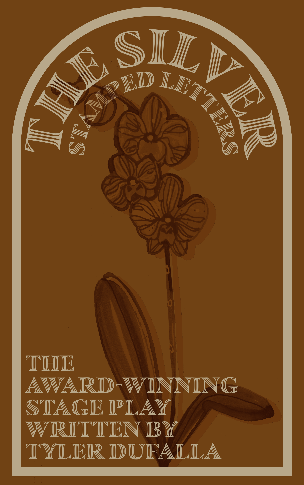
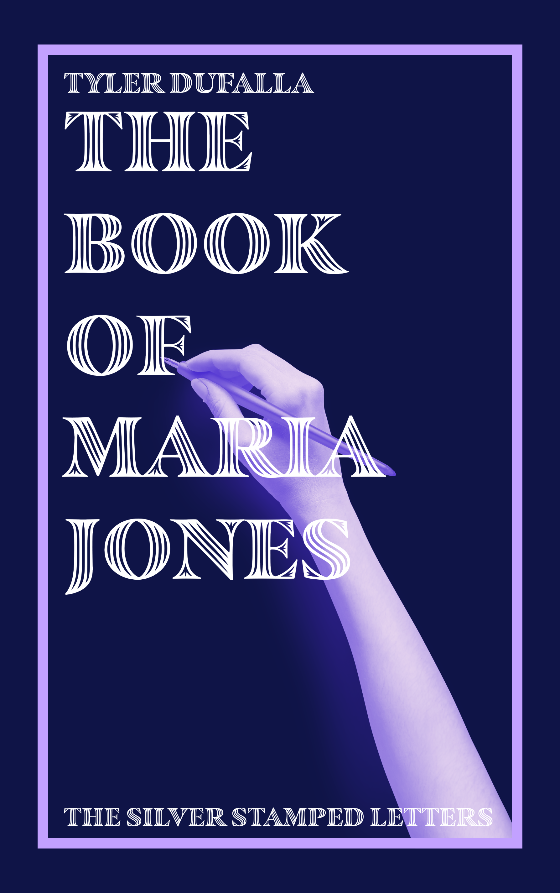

Loraine believes that she is being watched. After countless letters sent through the mail that contain play scripts of her actions, conversations and thoughts from the previous day, she begins to get accustomed to the event. However, everything changes for her when she receives a play script of the day ahead of her. Every event in the script she gets that day is happening as she reads it. She can see people talking to her, where she's going and how she's feeling. Jarred, she enlists her best friend, Spencer, to help her figure out the origin of these suspicious letters. What they find changes absolutely everything. They learn that maybe sometimes it's better off to not know the truth...
Written as a bonus parallel story, The Book of Maria Jones follows the seemingly innocent character of Maria from the original play and provides backstory to the mystery of the letters and a new perspective on the events of The Silver Stamped Letters.
Both of these plays are available to read for free online at Apple Books and Barnes & Noble.
© 2026 Tyler Dufalla
this website was handmade (with a bit of help) and is completely open source.